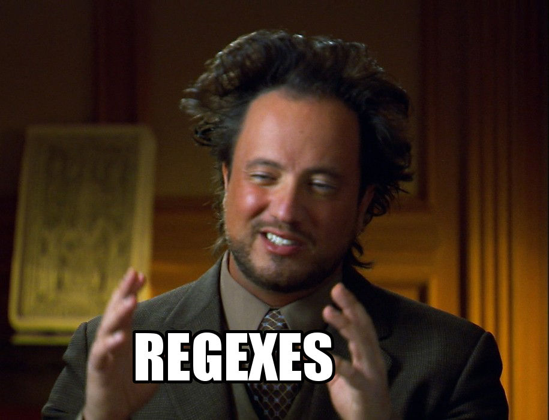

class: inverse, middle, center layout: true name: title .footnote[6th March 2018] --- layout: true class: inverse --- template: title <h1>JavaScript power tools for Emacs</h1> --- template: title count: false <h1><span class="title-text"><del>JavaScript</del><span class="replaced-title-text">Developer</span> power tools for Emacs</span></h1> ??? The topic is about JavaScript, but the tools are mostly language agnostic. --- class: middle # Topics 1. Editing (js2-mode, rjsx-mode, highlight-symbol) 2. Linting (Flycheck) 3. File navigation (Projectile) 4. Symbol navigation (ggtags) 5. Word completion (Company) 6. Grepping (ag.el, counsel-projectile) ??? We go through editing and linting (#1-2), word completion and grepping (#5-6) quickly, focusing on navigation (#3-4). Of these topics, I think I have most to share about is ggtags, so that's where I shall spend time most. --- class: middle # How we go through the topics - Describe tool's purpose - Why I use it - Useful customizations I've applied - Show a small demo (Package installation with `M-x list-packages` from [MELPA] archive.) ??? package.el is included in Emacs. --- class: middle # Editing: [js2-mode] Major mode package for JS and json sources, provides font-locking (syntax highlighting). ## Why? - Implements accurate EcmaScript parser (port of Rhino) - (Bouncing) indentation - Extended by rjsx-mode, see later Caveat: font-locking takes time on big buffers. ??? Demo: [fibonacci.js][demo-fibonacci] --- class: middle ## js2-mode customizations Ensure consistent indentation with 2 space chars: ``` lisp (customize-set-variable 'js-indent-level 2) (customize-set-variable 'js2-basic-offset 2) (customize-set-variable 'js2-bounce-indent-p t) (defun mute-fun (&rest args)) ;; Don't double-indent multiline statement (advice-add #'js--multi-line-declaration-indentation :around #'mute-fun) ``` ??? Demo: [assign.js][demo-assign] --- class: middle # Editing: [rjsx-mode] Extends js2-mode to support `.jsx` sources. --- class: middle ## rjsx-mode usage No customizations available. Indentation works best when you wrap JSX element spanning many lines in parentheses: ``` jsx const Links = ({urls, makeLink}) => { * return ( <div className="links"> {urls.map(u => makeLink(u))} </div> * ) } ``` ??? Customization: yourself. Adapt the style above. Demo: [SingleSelect.jsx][demo-single-select] --- class: middle # Editing: [highlight-symbol] Toggle highlighting of symbol at point (cursor). ## Why? Helps debugging (follow where variable is used). ??? Demo --- class: middle ## highlight-symbol customizations Pick your colors: `M-x list-colors-display`. ``` lisp ;; Select colors you like for highlighting (customize-set-variable 'highlight-symbol-colors '("orange3" "DeepPink3" "cyan4" "MediumPurple3" "SpringGreen4" "DarkOrange3" "HotPink3" "RoyalBlue1" "OliveDrab")) ;; After loading theme (customize-set-variable 'highlight-symbol-foreground-color (face-attribute 'default :foreground)) ``` --- class: middle # Linting: [Flycheck] Integrate external linting tool to Emacs. ## Why? - Show linting errors automatically (after delay, after saving buffer) - Supports many linters (backends), with fallback mechanism - Helps you to abide by the `.eslintrc.json` of your project ??? Demo --- class: middle ## Flycheck usage Install linter: ``` bash npm install -g eslint eslint-plugin-react ``` Enable mode globally: ``` lisp (global-flycheck-mode) ``` --- class: middle # File navigation: [Projectile] Project abstraction for files. ## Why? - Quickly find files in project - Quickly switch between - implementation and test source - component sources: `.jsx` and `.css` - Attempt to open file by relative path at point - Remembers recent projects for quick switching - Set root directory for invoking other tools: - ag - GNU Global's gtags - UI wrappers for Ivy ([counsel-projectile]) and Helm ([helm-projectile]) ??? Demo --- class: middle ## Projectile customizations .font-size-80[ ``` lisp ;; Easy access for often used commands (global-set-key (kbd "C-c F") #'projectile-find-file-dwim) (global-set-key (kbd "C-c f") #'counsel-projectile-find-file) (global-set-key (kbd "C-c i") #'projectile-toggle-between-implementation-and-test) (global-set-key (kbd "C-c o") #'projectile-find-other-file) (global-set-key (kbd "C-c s") #'counsel-projectile-ag) ;; Register other source to switch to from current (dolist (l '(("js" "scss" "less" "css" "html") ("jsx" "scss" "less" "css" "html") ("scss" "jsx" "js" "html") ("less" "jsx" "js" "html") ("css" "jsx" "js" "html"))) (add-to-list 'projectile-other-file-alist l)) ;; Register test suffix for npm project (projectile-register-project-type 'npm '("package.json") :compile "npm install" :test "npm test" :test-suffix ".test") ;; Alternatively, use helm-projectile (customize-set-variable 'projectile-completion-system 'ivy) (counsel-projectile-mode) ``` ] --- class: middle # Symbol navigation: [ggtags] GNU Global frontend for Emacs. ## Why? - Find definition of symbols - Find references of symbols - Update symbol databases incrementally, after saving buffer - Reliable - Easy to extend with [Ctags][Exuberant Ctags] - Reasonably fast Caveat: learning curve (setup has many components) ??? Automatic symbol database is big time saver. Demo --- ## ggtags: the components ### [GNU Global] ("gtags") - finds locations of _definitions_ and _references_ of language symbols - has built-in parsers for C, C++, Yacc, Java, Asm, PHP - incremental updates to database files - add additional language parsers with plugins -- ### [Exuberant Ctags] - stable (but unmaintained since 2009) - supports many languages, user-extendable - extends Global's symbol definition matching - Global includes plugin out-of-the-box, user provides binary for Ctags -- ### [Pygments] - supports many languages - extends Global's symbol reference matching - Global includes plugin and the Python implementation --- class: center, middle ## ggtags: extending Ctags  ??? Regular expressions: * ancient technology, * feels alien after you come back reading what you had written. --- class: middle ## ggtags: extending Ctags with [regexes][tkareine-ctags-conf] You can go surprisingly far parsing modern JavaScript with regexes. The problems: - regexes are difficult to understand (maintain) - not context sensitive parsing - no multiline matching in Exuberant Ctags (one line at a time) - no comments are allowed between regexes in `.ctags` file To manage it: [gtags test suite][tkareine-gtags-test] ??? Demo --- class: middle ## ggtags: how to start using With Homebrew on macOS: ``` bash brew install ctags brew install global --with-ctags --with-pygments ``` In [`.ctags`][tkareine-ctags-conf], define regexes to match JavaScript (and other) sources. In [`.globalrc`][tkareine-gtags-conf], configure GNU Global to use Pygments and Ctags. Downside: you need to duplicate configuration for known source file suffixes in both Ctag's and Global's configuration. In Emacs, install ggtags package and configure: ``` lisp ;; Override Global configuration label to enable Pygments backend (have ;; corresponding label in .globalrc) (customize-set-variable 'ggtags-process-environment '("GTAGSLABEL=default")) ;; Enable ggtags for selected major modes (add-hook 'js2-mode-hook #'ggtags-mode) (add-hook 'scss-mode-hook #'ggtags-mode) ``` --- class: middle ## ggtags: [Universal Ctags], the alternative - in active development …but no releases so far - works with GNU Global …but you need to maintain the installation of Global yourself - has parser for modern JavaScript syntax …but does not pass my test suite completely yet Personally, I'll wait for release and inclusion to homebrew-core and Global's Homebrew formula. --- ## ggtags: thoughts .plus-list[ - Maintaining and extending Ctags with regexes has been ok (but would not be possible without a test suite) - Simple mode of operation, easy to tune - Language agnostic solution - Project specific global database: jump to CSS class from JSX source - Incremental updates to Global database when saving buffers is convenient - Matching covers ~ 80% of use cases ] -- .minus-list[ - …But the remaining 20% are impossible to cover - Dump matching, no syntactic sense (on the other hand, JS is very dynamic in nature, anyway) ] ??? Dump matching: you'll get matches for nonrelevant symbols. -- Maybe the future is in Microsoft's Language Server Protocol (from VSCode)? Editor-independent server ([js-ts-langserver]) ⇔ Emacs specific client ([lsp-mode]). ??? - lsp-mode seems ok - javascript-typescript-langserver is lacking in features - the combination seems slow to find definitions - does not work reliably with a project with many npm subprojects -- But even with specialized language parser, I see use for Global and Ctags. For example, it's easy to extend `.ctags` to match registered variables in Ansible sources: ``` bash --regex-yaml=/^[ \t]*register:[ \t]*([A-Za-z0-9_$]+)/\1/r,ansible registers/ ``` --- class: middle # Word completion: [Company] Show completion candidates for partial word at point after delay. ## Why? - Utilizes many backends as candidate sources: 1. sequentially finds completion candidates from many backends, one-by-one, 2. until one returns nonempty candidate set - Backends include: - `company-capf`, for built-in `completion-at-point` hooks (ggtags) - `company-dabbrev-code`, for words in buffer(s) that are not inside strings and comments - `company-dabbrev`, for words in buffer(s) - Shows popup when many candidates ??? Demo --- class: middle ## Company customizations Enable mode globally: ``` lisp (global-company-mode) ``` Making dabbrev backend work more reasonably: ``` lisp ;; Don't lowercase completion candidates (dabbrev backend) (customize-set-variable 'company-dabbrev-downcase nil) ;; Ignore case when collecting completion candidates and copy candidate ;; verbatim (dabbrev and dabbrev-code backends) (customize-set-variable 'company-dabbrev-ignore-case t) (customize-set-variable 'company-dabbrev-code-ignore-case t) ``` ## See also `M-x hippie-expand` (built-in, when simple completion suffices) --- class: middle # Grepping: [ag.el], [counsel-projectile] Run ag search tool from Emacs, see results in buffer. ## Why? - When symbol navigation fails - When you work with text - Use `ag-project-regexp` (ag.el) to store the search in compilation buffer - revisit search results - rerun the search - Use `counsel-projectile-ag` to search-and-forget (Helm users, see [helm-ag].) ??? Demo --- class: middle ## ag.el customization ``` lisp ;; Keep these close (global-set-key (kbd "C-c a") #'ag-project-regexp) (global-set-key (kbd "C-c s") #'counsel-ag) ;; Highlight matches in compilation buffer (customize-set-variable 'ag-highlight-search t) ;; Projectile determines project root (customize-set-variable 'ag-project-root-function (lambda (_dir) (projectile-project-root))) ``` --- class: center, middle # Thanks! .width-40[I have learned and adapted many tools presented here from you.] .footnote[Slides made with [remark]] --- class: middle ## Bonus: use Projectile to select gtags destination dir .font-size-80[ ``` lisp (defun make-gtags (rootdir) "Make gtags files to the current project. If called with a prefix, specify the directory to make gtags files for." (interactive (cl-flet ((read-dir () (read-directory-name "Make GTAGS to: " nil nil t))) (let ((dir (if current-prefix-arg (read-dir) (if-let ((proj-dir (projectile-project-root))) proj-dir (read-dir))))) (list dir)))) (let ((current-prefix-arg nil)) ; reset as it might affect future commands (require 'ggtags) (ggtags-create-tags rootdir))) (global-set-key (kbd "C-c T") #'make-gtags) ``` ] `projectile-project-root` is useful for wrapping interactive commands, saving keystrokes. --- class: middle ## Bonus: recent files in buffer switcher .font-size-80[ ``` lisp ;;; Recentf: shows list of recently opened files (require 'recentf) (customize-set-variable 'recentf-save-file (expand-file-name "~/.emacs/recentf")) ;; Exclude recentf save file and Emacs ELPA autoloads (customize-set-variable 'recentf-exclude (list (concat "\\`" (expand-file-name "~/.emacs/recentf") "\\'") (concat "\\`" (expand-file-name "~/.emacs/elpa") "/.*-autoloads.elc?\\'"))) (defun recentf-save-list-silent () (let ((inhibit-message t)) (recentf-save-list))) ;; Save the list of recent files periodically. Normally, recentf saves ;; the list when Emacs exits cleanly. If Emacs crashes, that save is ;; probably not done. (run-at-time (* 5 60) (* 5 60) #'recentf-save-list-silent) (recentf-mode) ;; Show recentf files in buffer switcher (customize-set-variable 'ivy-use-virtual-buffers t) (global-set-key (kbd "M-x") #'counsel-M-x) ``` ] [Company]: https://company-mode.github.io/ [Exuberant Ctags]: http://ctags.sourceforge.net/ [Flycheck]: http://www.flycheck.org/ [GNU Global]: https://www.gnu.org/software/global/ [Melpa]: https://melpa.org/#/ [Projectile]: https://github.com/bbatsov/projectile [Pygments]: http://pygments.org/ [Universal Ctags]: https://github.com/universal-ctags/ctags [ag.el]: https://github.com/Wilfred/ag.el [counsel-projectile]: https://github.com/ericdanan/counsel-projectile [demo-assign]: demo/assign.js [demo-fibonacci]: demo/fibonacci.js [demo-single-select]: demo/SingleSelect.jsx [ggtags]: https://github.com/leoliu/ggtags [helm-ag]: https://github.com/syohex/emacs-helm-ag [helm-projectile]: https://github.com/bbatsov/helm-projectile [highlight-symbol]: https://github.com/nschum/highlight-symbol.el [js-ts-langserver]: https://github.com/sourcegraph/javascript-typescript-langserver [js2-mode]: https://github.com/mooz/js2-mode [lsp-mode]: https://github.com/emacs-lsp/lsp-mode [remark]: https://github.com/gnab/remark [rjsx-mode]: https://github.com/nschum/highlight-symbol.el [tkareine-ctags-conf]: https://github.com/tkareine/dotfiles/blob/master/.ctags [tkareine-gtags-conf]: https://github.com/tkareine/dotfiles/blob/master/.globalrc [tkareine-gtags-test]: https://github.com/tkareine/dotfiles/blob/master/test/gtags_test.sh